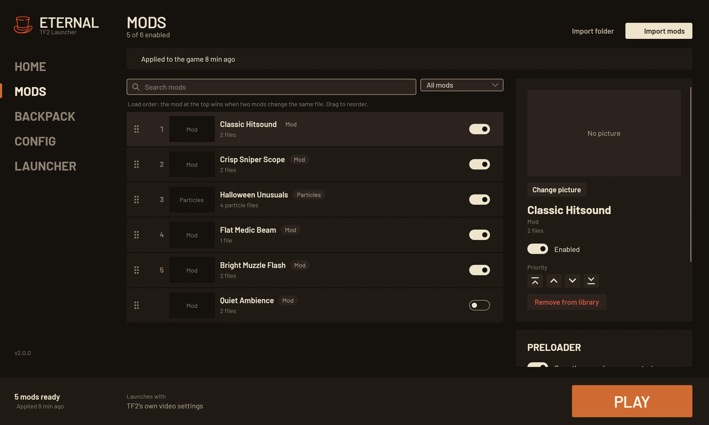
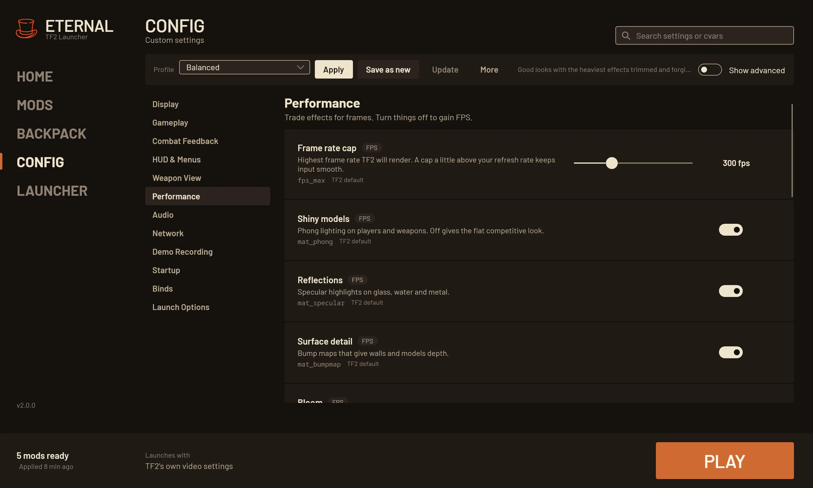
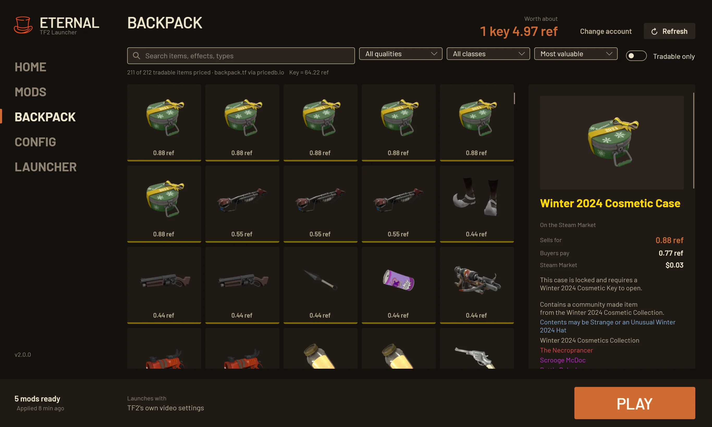
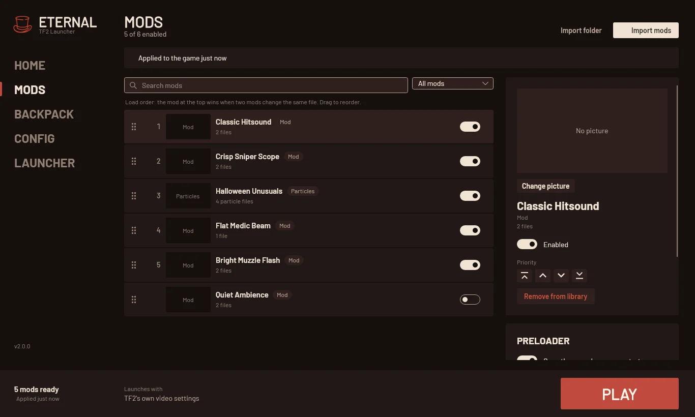
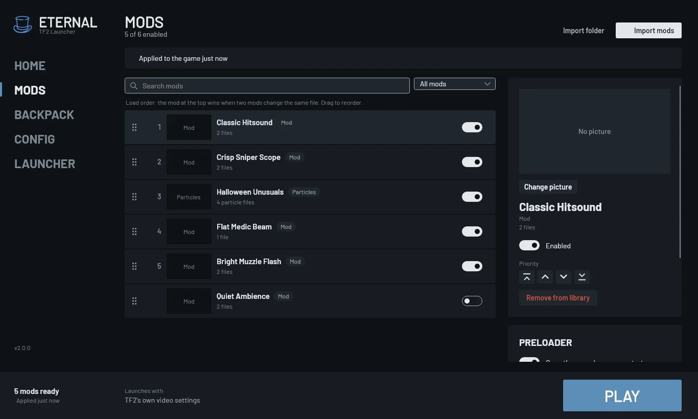
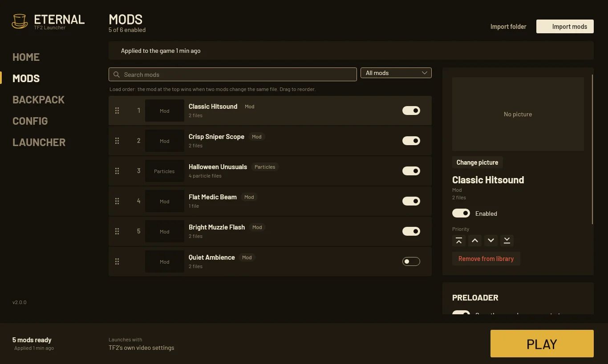

EternalTF2 Launcher

A free launcher for Team Fortress 2 on Windows and Linux. It applies mods that load in Casual, explains every setting it writes and shows your backpack with prices.
DownloadMods in Casual
Drop a VPK, a folder or a ZIP, RAR or 7z file on the window.
The mods you switch on are packed into tf/custom by cueki's casual-pre-loader, which is where Casual servers load them from.
DownloadPlay waits for it
When two mods change the same file, the one higher in the list wins, and each mod shows which files it wins or loses.
The game folder is never touched while TF2 runs, Play waits for a build to finish, and Restore vanilla puts the game back as Steam installed it.
How mods reach the gameConfig
Settings explained
Every setting says what it does, whether it costs frames and whether it goes on the launch line.
Only what you change
Anything you never touch stays with TF2. What you change goes into one marked block in autoexec.cfg.
Binds by keypress
Press the key or mouse button, then type the command.
Profiles
Competitive, Max Performance, Max Quality and Balanced, plus your own. A profile can carry your mods and exports to a file you can share.
Your launch options
Kept as you typed them. The full launch line is shown before you play.
One block in autoexec.cfg
This is what the launcher writes after you set a field of view, fast weapon switch, damage numbers, a frame cap and one bind. Lines outside the block are yours and stay as they are. The old file is kept as autoexec.cfg.eternal-backup.
// === ETERNAL LAUNCHER MANAGED BLOCK — do not edit between these markers ===
// Gameplay
fov_desired 90
hud_fastswitch 1
// Combat Feedback
hud_combattext 1
// Weapon View
viewmodel_fov 70
// Performance
fps_max 240
// Binds
bind "f" "voicemenu 0 0"
// === ETERNAL LAUNCHER MANAGED BLOCK END ===
Your backpack, priced
Your public TF2 inventory with item art, qualities and attributes. Prices come from backpack.tf through pricedb.io and are written in keys and refined, the way trades are. Pick an item to see its Steam Market price in your currency.

Eightthemes



Pick one and this page changes to it. The launcher also takes any accent colour, your TF2 screenshots as a background and a size for the whole window.
Install
On Windows, run EternalLauncher-2.0.0-win-x64-setup.exe from the latest release. It installs for your user without admin rights. The portable zip runs from any folder and keeps its data next to it.
On Linux, extract the tar.gz and run the install script. It adds a menu entry and an eternal-launcher command, and ./install.sh --remove takes it out again.
tar xf EternalLauncher-2.0.0-linux-x64.tar.gz
cd EternalLauncher && ./install.shNeither needs .NET or Python. On Linux, install Wine as well so QuickPrecache can run; without it the launcher skips that step and tells you.
Coming from 1.x, your settings, profiles and mods are imported on the first start.
Questions
Something else? Open an issue on GitHub.
Do mods really load in Casual?
Most visual mods do: particles and unusual effects, weapon and cosmetic skins, war paints, map textures, props and HUDs. Full player-model replacements are hit or miss, because the server often puts the vanilla model back.
What does it change in my TF2 folder?
The preload in tf/custom and one marked block in autoexec.cfg. Your mod library stays in the launcher's own folder, and Restore vanilla removes the preload.
Can I still start TF2 from Steam?
Yes, the preload stays in place. Copy the launch line from the Config tab into TF2's launch options so the preloader's config still runs.
Does it cost anything?
No. It's free and open source under the MIT license.
Where are the logs?
In ~/.local/share/eternal-launcher/logs on Linux, and in %LOCALAPPDATA%\Eternal TF2 Launcher\logs on Windows.
Built on cueki's preloader
casual-pre-loader
cueki's casual-pre-loader is what puts the mods into the game. It ships with the launcher unchanged, and the credit for it goes to cueki and its contributors.
Thanks also to
backpack.tf and pricedb.io for prices, GameBanana and its creators, Deadlock Mod Manager for ideas on recovery and conflicts, and Jeremy Tribby for the Barlow typeface.